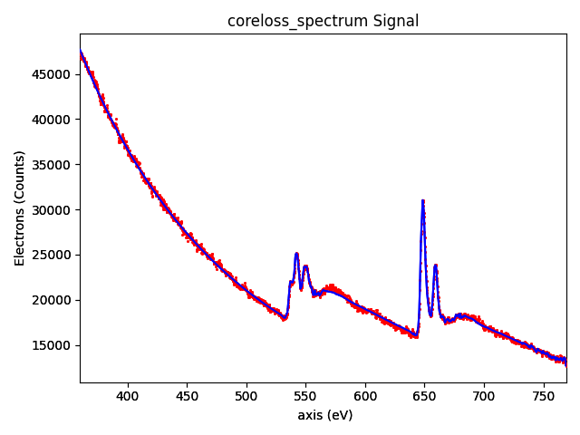

Note
Go to the end to download the full example code.
EELS curve fitting#
Performs curve fitting to an EELS spectrum, plots the result and saves it as png file.
 0%| | 0.00/42.3M [00:00<?, ?B/s]
0%| | 15.4k/42.3M [00:00<06:09, 114kB/s]
0%| | 111k/42.3M [00:00<01:51, 380kB/s]
1%|▎ | 299k/42.3M [00:00<01:01, 684kB/s]
1%|▌ | 545k/42.3M [00:00<00:44, 943kB/s]
2%|▋ | 724k/42.3M [00:00<00:43, 950kB/s]
2%|▊ | 953k/42.3M [00:01<00:39, 1.05MB/s]
3%|█ | 1.17M/42.3M [00:01<00:38, 1.08MB/s]
3%|█▏ | 1.41M/42.3M [00:01<00:35, 1.16MB/s]
4%|█▍ | 1.62M/42.3M [00:01<00:35, 1.15MB/s]
4%|█▌ | 1.80M/42.3M [00:01<00:37, 1.09MB/s]
5%|█▊ | 2.05M/42.3M [00:01<00:34, 1.16MB/s]
5%|█▉ | 2.25M/42.3M [00:02<00:35, 1.13MB/s]
6%|██ | 2.42M/42.3M [00:02<00:36, 1.08MB/s]
6%|██▎ | 2.65M/42.3M [00:02<00:35, 1.12MB/s]
7%|██▌ | 2.87M/42.3M [00:02<00:34, 1.13MB/s]
7%|██▋ | 3.06M/42.3M [00:02<00:35, 1.11MB/s]
8%|██▉ | 3.29M/42.3M [00:03<00:34, 1.14MB/s]
8%|███ | 3.54M/42.3M [00:03<00:32, 1.20MB/s]
10%|███▌ | 4.04M/42.3M [00:03<00:23, 1.65MB/s]
11%|███▉ | 4.47M/42.3M [00:03<00:20, 1.84MB/s]
11%|████▏ | 4.71M/42.3M [00:03<00:22, 1.69MB/s]
12%|████▍ | 5.07M/42.3M [00:04<00:21, 1.76MB/s]
13%|████▉ | 5.70M/42.3M [00:04<00:16, 2.23MB/s]
14%|█████▏ | 5.94M/42.3M [00:04<00:18, 1.93MB/s]
15%|█████▍ | 6.20M/42.3M [00:04<00:20, 1.77MB/s]
16%|█████▊ | 6.64M/42.3M [00:04<00:18, 1.95MB/s]
17%|██████▎ | 7.25M/42.3M [00:04<00:15, 2.33MB/s]
18%|██████▋ | 7.59M/42.3M [00:05<00:15, 2.18MB/s]
19%|██████▉ | 7.90M/42.3M [00:05<00:17, 2.00MB/s]
20%|███████▏ | 8.25M/42.3M [00:05<00:17, 1.96MB/s]
20%|███████▌ | 8.57M/42.3M [00:05<00:17, 1.90MB/s]
21%|███████▊ | 8.97M/42.3M [00:05<00:17, 1.96MB/s]
22%|████████▏ | 9.33M/42.3M [00:06<00:16, 1.95MB/s]
23%|████████▋ | 9.88M/42.3M [00:06<00:14, 2.26MB/s]
24%|████████▉ | 10.2M/42.3M [00:06<00:15, 2.11MB/s]
25%|█████████▏ | 10.5M/42.3M [00:06<00:15, 2.00MB/s]
25%|█████████▍ | 10.8M/42.3M [00:06<00:17, 1.80MB/s]
27%|█████████▉ | 11.4M/42.3M [00:07<00:13, 2.23MB/s]
28%|██████████▏ | 11.7M/42.3M [00:07<00:15, 2.01MB/s]
29%|██████████▋ | 12.2M/42.3M [00:07<00:13, 2.27MB/s]
29%|██████████▉ | 12.4M/42.3M [00:07<00:15, 1.96MB/s]
30%|███████████ | 12.6M/42.3M [00:07<00:15, 1.94MB/s]
30%|███████████▏ | 12.8M/42.3M [00:07<00:17, 1.64MB/s]
31%|███████████▌ | 13.2M/42.3M [00:08<00:17, 1.71MB/s]
32%|███████████▋ | 13.3M/42.3M [00:08<00:19, 1.48MB/s]
32%|███████████▊ | 13.5M/42.3M [00:08<00:21, 1.35MB/s]
33%|████████████ | 13.7M/42.3M [00:08<00:22, 1.26MB/s]
34%|████████████▍ | 14.2M/42.3M [00:08<00:17, 1.60MB/s]
34%|████████████▋ | 14.5M/42.3M [00:09<00:16, 1.64MB/s]
35%|████████████▊ | 14.7M/42.3M [00:09<00:18, 1.47MB/s]
35%|█████████████ | 15.0M/42.3M [00:09<00:19, 1.42MB/s]
36%|█████████████▍ | 15.3M/42.3M [00:09<00:16, 1.60MB/s]
37%|█████████████▋ | 15.6M/42.3M [00:09<00:17, 1.54MB/s]
38%|█████████████▉ | 15.9M/42.3M [00:09<00:16, 1.58MB/s]
38%|██████████████▏ | 16.3M/42.3M [00:10<00:15, 1.65MB/s]
40%|██████████████▋ | 16.7M/42.3M [00:10<00:13, 1.94MB/s]
41%|███████████████ | 17.1M/42.3M [00:10<00:12, 1.99MB/s]
41%|███████████████▎ | 17.5M/42.3M [00:10<00:13, 1.90MB/s]
42%|███████████████▋ | 18.0M/42.3M [00:10<00:11, 2.14MB/s]
43%|███████████████▉ | 18.2M/42.3M [00:11<00:12, 1.90MB/s]
44%|████████████████▏ | 18.5M/42.3M [00:11<00:12, 1.88MB/s]
44%|████████████████▍ | 18.7M/42.3M [00:11<00:14, 1.63MB/s]
45%|████████████████▊ | 19.2M/42.3M [00:11<00:12, 1.88MB/s]
46%|████████████████▉ | 19.4M/42.3M [00:11<00:14, 1.62MB/s]
47%|█████████████████▎ | 19.8M/42.3M [00:12<00:12, 1.78MB/s]
47%|█████████████████▍ | 20.0M/42.3M [00:12<00:14, 1.53MB/s]
48%|█████████████████▌ | 20.1M/42.3M [00:12<00:19, 1.15MB/s]
48%|█████████████████▊ | 20.3M/42.3M [00:12<00:19, 1.14MB/s]
49%|█████████████████▉ | 20.5M/42.3M [00:12<00:19, 1.12MB/s]
49%|██████████████████ | 20.7M/42.3M [00:13<00:20, 1.08MB/s]
50%|██████████████████▍ | 21.1M/42.3M [00:13<00:15, 1.35MB/s]
50%|██████████████████▌ | 21.3M/42.3M [00:13<00:16, 1.26MB/s]
51%|██████████████████▉ | 21.6M/42.3M [00:13<00:15, 1.36MB/s]
53%|███████████████████▍ | 22.2M/42.3M [00:13<00:10, 1.97MB/s]
53%|███████████████████▌ | 22.4M/42.3M [00:13<00:11, 1.70MB/s]
54%|███████████████████▉ | 22.8M/42.3M [00:14<00:11, 1.74MB/s]
55%|████████████████████▏ | 23.1M/42.3M [00:14<00:10, 1.77MB/s]
56%|████████████████████▋ | 23.6M/42.3M [00:14<00:09, 2.03MB/s]
56%|████████████████████▉ | 23.9M/42.3M [00:14<00:09, 1.85MB/s]
57%|█████████████████████ | 24.1M/42.3M [00:14<00:10, 1.69MB/s]
58%|█████████████████████▌ | 24.6M/42.3M [00:15<00:08, 2.05MB/s]
59%|█████████████████████▊ | 24.9M/42.3M [00:15<00:09, 1.81MB/s]
60%|██████████████████████ | 25.2M/42.3M [00:15<00:09, 1.82MB/s]
60%|██████████████████████▏ | 25.4M/42.3M [00:15<00:10, 1.59MB/s]
61%|██████████████████████▍ | 25.6M/42.3M [00:15<00:11, 1.48MB/s]
61%|██████████████████████▋ | 25.9M/42.3M [00:16<00:11, 1.41MB/s]
62%|██████████████████████▉ | 26.2M/42.3M [00:16<00:11, 1.43MB/s]
63%|███████████████████████▏ | 26.5M/42.3M [00:16<00:10, 1.55MB/s]
63%|███████████████████████▎ | 26.7M/42.3M [00:16<00:10, 1.54MB/s]
63%|███████████████████████▍ | 26.8M/42.3M [00:16<00:11, 1.31MB/s]
64%|███████████████████████▌ | 27.0M/42.3M [00:16<00:13, 1.18MB/s]
65%|███████████████████████▊ | 27.3M/42.3M [00:17<00:11, 1.33MB/s]
65%|████████████████████████ | 27.5M/42.3M [00:17<00:11, 1.30MB/s]
66%|████████████████████████▎ | 27.8M/42.3M [00:17<00:10, 1.36MB/s]
66%|████████████████████████▍ | 28.0M/42.3M [00:17<00:11, 1.27MB/s]
68%|█████████████████████████ | 28.6M/42.3M [00:17<00:07, 1.94MB/s]
69%|█████████████████████████▍ | 29.0M/42.3M [00:17<00:06, 1.99MB/s]
69%|█████████████████████████▌ | 29.3M/42.3M [00:18<00:07, 1.79MB/s]
70%|█████████████████████████▉ | 29.6M/42.3M [00:18<00:07, 1.81MB/s]
71%|██████████████████████████ | 29.8M/42.3M [00:18<00:07, 1.58MB/s]
72%|██████████████████████████▌ | 30.3M/42.3M [00:18<00:06, 1.92MB/s]
73%|██████████████████████████▊ | 30.7M/42.3M [00:18<00:06, 1.90MB/s]
73%|███████████████████████████ | 30.9M/42.3M [00:19<00:06, 1.72MB/s]
74%|███████████████████████████▎ | 31.2M/42.3M [00:19<00:06, 1.68MB/s]
75%|███████████████████████████▋ | 31.6M/42.3M [00:19<00:06, 1.78MB/s]
75%|███████████████████████████▊ | 31.8M/42.3M [00:19<00:06, 1.67MB/s]
76%|████████████████████████████▏ | 32.3M/42.3M [00:19<00:05, 1.85MB/s]
77%|████████████████████████████▍ | 32.5M/42.3M [00:20<00:06, 1.61MB/s]
78%|████████████████████████████▊ | 32.9M/42.3M [00:20<00:05, 1.81MB/s]
78%|████████████████████████████▉ | 33.1M/42.3M [00:20<00:05, 1.66MB/s]
79%|█████████████████████████████▏ | 33.4M/42.3M [00:20<00:05, 1.61MB/s]
79%|█████████████████████████████▍ | 33.6M/42.3M [00:20<00:06, 1.39MB/s]
80%|█████████████████████████████▌ | 33.8M/42.3M [00:20<00:06, 1.35MB/s]
80%|█████████████████████████████▊ | 34.0M/42.3M [00:21<00:06, 1.29MB/s]
81%|██████████████████████████████ | 34.4M/42.3M [00:21<00:05, 1.53MB/s]
82%|██████████████████████████████▎ | 34.7M/42.3M [00:21<00:05, 1.47MB/s]
83%|██████████████████████████████▌ | 34.9M/42.3M [00:21<00:05, 1.45MB/s]
83%|██████████████████████████████▊ | 35.2M/42.3M [00:21<00:04, 1.43MB/s]
84%|██████████████████████████████▉ | 35.4M/42.3M [00:22<00:05, 1.32MB/s]
84%|███████████████████████████████▏ | 35.6M/42.3M [00:22<00:05, 1.32MB/s]
85%|███████████████████████████████▎ | 35.8M/42.3M [00:22<00:05, 1.27MB/s]
85%|███████████████████████████████▌ | 36.1M/42.3M [00:22<00:04, 1.28MB/s]
86%|███████████████████████████████▋ | 36.3M/42.3M [00:22<00:04, 1.21MB/s]
86%|███████████████████████████████▉ | 36.5M/42.3M [00:23<00:04, 1.27MB/s]
87%|████████████████████████████████ | 36.7M/42.3M [00:23<00:05, 1.10MB/s]
87%|█████████████████████████████████ | 36.8M/42.3M [00:23<00:05, 984kB/s]
88%|████████████████████████████████▍ | 37.0M/42.3M [00:23<00:04, 1.08MB/s]
88%|████████████████████████████████▌ | 37.3M/42.3M [00:23<00:04, 1.12MB/s]
89%|████████████████████████████████▊ | 37.6M/42.3M [00:23<00:03, 1.24MB/s]
89%|█████████████████████████████████ | 37.8M/42.3M [00:24<00:03, 1.31MB/s]
90%|█████████████████████████████████▎ | 38.0M/42.3M [00:24<00:03, 1.23MB/s]
91%|█████████████████████████████████▌ | 38.4M/42.3M [00:24<00:02, 1.49MB/s]
92%|█████████████████████████████████▉ | 38.8M/42.3M [00:24<00:02, 1.68MB/s]
92%|██████████████████████████████████▏ | 39.1M/42.3M [00:24<00:02, 1.60MB/s]
93%|██████████████████████████████████▍ | 39.3M/42.3M [00:25<00:01, 1.57MB/s]
93%|██████████████████████████████████▌ | 39.5M/42.3M [00:25<00:02, 1.35MB/s]
94%|██████████████████████████████████▋ | 39.6M/42.3M [00:25<00:02, 1.16MB/s]
94%|██████████████████████████████████▉ | 39.9M/42.3M [00:25<00:01, 1.24MB/s]
95%|███████████████████████████████████ | 40.1M/42.3M [00:25<00:01, 1.18MB/s]
95%|███████████████████████████████████▎ | 40.3M/42.3M [00:25<00:01, 1.14MB/s]
96%|███████████████████████████████████▍ | 40.5M/42.3M [00:26<00:01, 1.17MB/s]
97%|███████████████████████████████████▉ | 41.1M/42.3M [00:26<00:00, 1.71MB/s]
98%|████████████████████████████████████▏| 41.3M/42.3M [00:26<00:00, 1.57MB/s]
98%|████████████████████████████████████▍| 41.6M/42.3M [00:26<00:00, 1.54MB/s]
99%|████████████████████████████████████▌| 41.8M/42.3M [00:26<00:00, 1.40MB/s]
99%|████████████████████████████████████▊| 42.1M/42.3M [00:27<00:00, 1.42MB/s]
100%|████████████████████████████████████▉| 42.2M/42.3M [00:27<00:00, 1.26MB/s]
0%| | 0.00/42.3M [00:00<?, ?B/s]
100%|██████████████████████████████████████| 42.3M/42.3M [00:00<00:00, 292GB/s]
0%| | 0.00/66.1M [00:00<?, ?B/s]
0%| | 50.2k/66.1M [00:00<04:05, 269kB/s]
0%|▏ | 214k/66.1M [00:00<01:45, 623kB/s]
1%|▏ | 401k/66.1M [00:00<01:22, 796kB/s]
1%|▍ | 663k/66.1M [00:00<01:03, 1.03MB/s]
1%|▌ | 941k/66.1M [00:00<00:54, 1.20MB/s]
2%|▌ | 1.10M/66.1M [00:01<00:59, 1.09MB/s]
2%|▊ | 1.43M/66.1M [00:01<00:49, 1.30MB/s]
3%|▉ | 1.66M/66.1M [00:01<00:50, 1.28MB/s]
3%|█ | 1.89M/66.1M [00:01<00:50, 1.26MB/s]
3%|█▏ | 2.13M/66.1M [00:01<00:50, 1.28MB/s]
4%|█▎ | 2.38M/66.1M [00:02<00:49, 1.29MB/s]
4%|█▌ | 2.72M/66.1M [00:02<00:43, 1.45MB/s]
4%|█▋ | 2.94M/66.1M [00:02<00:46, 1.36MB/s]
5%|█▊ | 3.20M/66.1M [00:02<00:45, 1.37MB/s]
5%|█▉ | 3.43M/66.1M [00:02<00:47, 1.33MB/s]
6%|██▏ | 3.90M/66.1M [00:02<00:36, 1.69MB/s]
6%|██▎ | 4.23M/66.1M [00:03<00:36, 1.71MB/s]
7%|██▌ | 4.49M/66.1M [00:03<00:38, 1.62MB/s]
7%|██▋ | 4.87M/66.1M [00:03<00:35, 1.73MB/s]
8%|██▉ | 5.14M/66.1M [00:03<00:36, 1.66MB/s]
8%|███ | 5.50M/66.1M [00:03<00:34, 1.74MB/s]
9%|███▎ | 5.90M/66.1M [00:04<00:32, 1.84MB/s]
9%|███▍ | 6.12M/66.1M [00:04<00:36, 1.66MB/s]
10%|███▋ | 6.58M/66.1M [00:04<00:31, 1.90MB/s]
10%|███▉ | 6.93M/66.1M [00:04<00:31, 1.88MB/s]
11%|████ | 7.15M/66.1M [00:04<00:35, 1.68MB/s]
11%|████▏ | 7.43M/66.1M [00:05<00:36, 1.62MB/s]
12%|████▎ | 7.78M/66.1M [00:05<00:34, 1.69MB/s]
12%|████▌ | 8.17M/66.1M [00:05<00:32, 1.81MB/s]
13%|████▋ | 8.40M/66.1M [00:05<00:35, 1.64MB/s]
13%|████▉ | 8.72M/66.1M [00:05<00:34, 1.67MB/s]
14%|█████▏ | 9.26M/66.1M [00:05<00:27, 2.03MB/s]
14%|█████▎ | 9.53M/66.1M [00:06<00:30, 1.84MB/s]
15%|█████▍ | 9.75M/66.1M [00:06<00:33, 1.66MB/s]
15%|█████▋ | 10.1M/66.1M [00:06<00:32, 1.74MB/s]
16%|█████▊ | 10.5M/66.1M [00:06<00:30, 1.82MB/s]
16%|██████ | 10.9M/66.1M [00:06<00:29, 1.85MB/s]
17%|██████▏ | 11.2M/66.1M [00:07<00:30, 1.79MB/s]
17%|██████▍ | 11.4M/66.1M [00:07<00:33, 1.64MB/s]
18%|██████▋ | 11.9M/66.1M [00:07<00:27, 1.99MB/s]
18%|██████▊ | 12.2M/66.1M [00:07<00:30, 1.79MB/s]
19%|██████▉ | 12.5M/66.1M [00:07<00:31, 1.70MB/s]
19%|███████ | 12.7M/66.1M [00:08<00:33, 1.61MB/s]
20%|███████▎ | 13.0M/66.1M [00:08<00:33, 1.60MB/s]
20%|███████▌ | 13.5M/66.1M [00:08<00:28, 1.85MB/s]
21%|███████▊ | 13.9M/66.1M [00:08<00:25, 2.03MB/s]
22%|████████ | 14.4M/66.1M [00:08<00:23, 2.18MB/s]
22%|████████▏ | 14.7M/66.1M [00:08<00:25, 2.03MB/s]
23%|████████▎ | 14.9M/66.1M [00:09<00:29, 1.74MB/s]
23%|████████▍ | 15.2M/66.1M [00:09<00:30, 1.66MB/s]
24%|████████▊ | 15.8M/66.1M [00:09<00:23, 2.13MB/s]
25%|█████████▏ | 16.3M/66.1M [00:09<00:21, 2.33MB/s]
25%|█████████▎ | 16.7M/66.1M [00:09<00:21, 2.31MB/s]
26%|█████████▌ | 17.0M/66.1M [00:10<00:23, 2.11MB/s]
26%|█████████▋ | 17.4M/66.1M [00:10<00:24, 1.98MB/s]
27%|█████████▊ | 17.6M/66.1M [00:10<00:28, 1.71MB/s]
27%|██████████ | 17.9M/66.1M [00:10<00:27, 1.78MB/s]
28%|██████████▏ | 18.3M/66.1M [00:10<00:26, 1.79MB/s]
28%|██████████▎ | 18.5M/66.1M [00:11<00:29, 1.60MB/s]
28%|██████████▌ | 18.8M/66.1M [00:11<00:29, 1.61MB/s]
29%|██████████▊ | 19.3M/66.1M [00:11<00:23, 1.97MB/s]
30%|██████████▉ | 19.6M/66.1M [00:11<00:26, 1.77MB/s]
30%|███████████ | 19.7M/66.1M [00:11<00:30, 1.52MB/s]
30%|███████████▏ | 20.1M/66.1M [00:11<00:29, 1.57MB/s]
31%|███████████▎ | 20.3M/66.1M [00:12<00:31, 1.47MB/s]
31%|███████████▍ | 20.5M/66.1M [00:12<00:32, 1.39MB/s]
31%|███████████▌ | 20.7M/66.1M [00:12<00:34, 1.32MB/s]
32%|███████████▊ | 21.0M/66.1M [00:12<00:32, 1.39MB/s]
32%|███████████▊ | 21.2M/66.1M [00:12<00:32, 1.38MB/s]
32%|███████████▉ | 21.4M/66.1M [00:13<00:33, 1.34MB/s]
33%|████████████ | 21.6M/66.1M [00:13<00:34, 1.31MB/s]
33%|████████████▎ | 22.0M/66.1M [00:13<00:30, 1.44MB/s]
34%|████████████▍ | 22.2M/66.1M [00:13<00:33, 1.32MB/s]
34%|████████████▌ | 22.3M/66.1M [00:13<00:35, 1.24MB/s]
34%|████████████▋ | 22.7M/66.1M [00:13<00:28, 1.50MB/s]
35%|████████████▉ | 23.1M/66.1M [00:14<00:25, 1.68MB/s]
36%|█████████████▏ | 23.6M/66.1M [00:14<00:21, 1.97MB/s]
36%|█████████████▎ | 23.9M/66.1M [00:14<00:23, 1.79MB/s]
36%|█████████████▍ | 24.1M/66.1M [00:14<00:25, 1.62MB/s]
37%|█████████████▋ | 24.4M/66.1M [00:14<00:26, 1.58MB/s]
37%|█████████████▊ | 24.6M/66.1M [00:15<00:29, 1.42MB/s]
38%|█████████████▉ | 24.8M/66.1M [00:15<00:29, 1.42MB/s]
38%|██████████████ | 25.0M/66.1M [00:15<00:32, 1.26MB/s]
38%|██████████████ | 25.2M/66.1M [00:15<00:34, 1.20MB/s]
39%|██████████████▎ | 25.6M/66.1M [00:15<00:27, 1.49MB/s]
39%|██████████████▍ | 25.9M/66.1M [00:16<00:26, 1.49MB/s]
40%|██████████████▋ | 26.1M/66.1M [00:16<00:27, 1.44MB/s]
40%|██████████████▋ | 26.3M/66.1M [00:16<00:32, 1.24MB/s]
40%|██████████████▊ | 26.5M/66.1M [00:16<00:30, 1.29MB/s]
40%|██████████████▉ | 26.7M/66.1M [00:16<00:32, 1.22MB/s]
41%|███████████████▏ | 27.1M/66.1M [00:16<00:26, 1.46MB/s]
42%|███████████████▍ | 27.5M/66.1M [00:17<00:23, 1.65MB/s]
42%|███████████████▌ | 27.8M/66.1M [00:17<00:23, 1.60MB/s]
42%|███████████████▋ | 28.0M/66.1M [00:17<00:27, 1.38MB/s]
43%|███████████████▊ | 28.2M/66.1M [00:17<00:28, 1.33MB/s]
43%|████████████████ | 28.7M/66.1M [00:17<00:21, 1.74MB/s]
44%|████████████████▏ | 29.0M/66.1M [00:18<00:22, 1.64MB/s]
44%|████████████████▎ | 29.2M/66.1M [00:18<00:24, 1.50MB/s]
44%|████████████████▍ | 29.4M/66.1M [00:18<00:26, 1.37MB/s]
45%|████████████████▌ | 29.6M/66.1M [00:18<00:28, 1.27MB/s]
45%|████████████████▋ | 29.9M/66.1M [00:18<00:26, 1.36MB/s]
46%|████████████████▉ | 30.2M/66.1M [00:19<00:23, 1.56MB/s]
46%|█████████████████ | 30.4M/66.1M [00:19<00:26, 1.36MB/s]
46%|█████████████████ | 30.6M/66.1M [00:19<00:29, 1.21MB/s]
47%|█████████████████▎ | 30.8M/66.1M [00:19<00:27, 1.26MB/s]
47%|█████████████████▎ | 31.0M/66.1M [00:19<00:29, 1.20MB/s]
47%|█████████████████▌ | 31.3M/66.1M [00:19<00:26, 1.31MB/s]
48%|█████████████████▋ | 31.5M/66.1M [00:20<00:28, 1.23MB/s]
48%|█████████████████▊ | 31.8M/66.1M [00:20<00:27, 1.26MB/s]
49%|█████████████████▉ | 32.1M/66.1M [00:20<00:25, 1.35MB/s]
49%|██████████████████ | 32.3M/66.1M [00:20<00:24, 1.39MB/s]
50%|██████████████████▎ | 32.7M/66.1M [00:20<00:20, 1.60MB/s]
50%|██████████████████▍ | 32.9M/66.1M [00:21<00:23, 1.43MB/s]
50%|██████████████████▌ | 33.2M/66.1M [00:21<00:21, 1.50MB/s]
51%|██████████████████▋ | 33.4M/66.1M [00:21<00:23, 1.37MB/s]
51%|██████████████████▊ | 33.7M/66.1M [00:21<00:21, 1.52MB/s]
51%|██████████████████▉ | 33.9M/66.1M [00:21<00:22, 1.45MB/s]
52%|███████████████████▏ | 34.2M/66.1M [00:21<00:20, 1.55MB/s]
52%|███████████████████▎ | 34.5M/66.1M [00:22<00:20, 1.56MB/s]
53%|███████████████████▌ | 35.0M/66.1M [00:22<00:16, 1.83MB/s]
54%|███████████████████▊ | 35.4M/66.1M [00:22<00:15, 1.97MB/s]
54%|███████████████████▉ | 35.6M/66.1M [00:22<00:17, 1.74MB/s]
54%|████████████████████ | 35.8M/66.1M [00:22<00:20, 1.50MB/s]
55%|████████████████████▏ | 36.0M/66.1M [00:23<00:21, 1.40MB/s]
55%|████████████████████▎ | 36.3M/66.1M [00:23<00:21, 1.40MB/s]
55%|████████████████████▍ | 36.6M/66.1M [00:23<00:20, 1.42MB/s]
56%|████████████████████▌ | 36.8M/66.1M [00:23<00:21, 1.39MB/s]
56%|████████████████████▊ | 37.2M/66.1M [00:23<00:18, 1.55MB/s]
57%|████████████████████▉ | 37.4M/66.1M [00:23<00:20, 1.40MB/s]
57%|█████████████████████ | 37.6M/66.1M [00:24<00:21, 1.32MB/s]
57%|█████████████████████▎ | 38.0M/66.1M [00:24<00:18, 1.53MB/s]
58%|█████████████████████▍ | 38.2M/66.1M [00:24<00:19, 1.46MB/s]
58%|█████████████████████▌ | 38.6M/66.1M [00:24<00:16, 1.68MB/s]
59%|█████████████████████▊ | 39.1M/66.1M [00:24<00:14, 1.88MB/s]
59%|█████████████████████▉ | 39.3M/66.1M [00:25<00:16, 1.63MB/s]
60%|██████████████████████▏ | 39.6M/66.1M [00:25<00:15, 1.72MB/s]
60%|██████████████████████▎ | 39.8M/66.1M [00:25<00:16, 1.57MB/s]
61%|██████████████████████▍ | 40.1M/66.1M [00:25<00:17, 1.49MB/s]
61%|██████████████████████▌ | 40.3M/66.1M [00:25<00:17, 1.46MB/s]
62%|██████████████████████▊ | 40.7M/66.1M [00:26<00:16, 1.53MB/s]
62%|██████████████████████▊ | 40.8M/66.1M [00:26<00:19, 1.31MB/s]
62%|██████████████████████▉ | 40.9M/66.1M [00:26<00:22, 1.13MB/s]
62%|███████████████████████ | 41.2M/66.1M [00:26<00:21, 1.15MB/s]
63%|███████████████████████▏ | 41.4M/66.1M [00:26<00:20, 1.20MB/s]
63%|███████████████████████▎ | 41.6M/66.1M [00:26<00:20, 1.21MB/s]
63%|███████████████████████▍ | 41.9M/66.1M [00:27<00:19, 1.24MB/s]
64%|███████████████████████▋ | 42.3M/66.1M [00:27<00:16, 1.47MB/s]
64%|███████████████████████▊ | 42.6M/66.1M [00:27<00:15, 1.53MB/s]
65%|████████████████████████ | 42.9M/66.1M [00:27<00:13, 1.67MB/s]
66%|████████████████████████▏ | 43.3M/66.1M [00:27<00:13, 1.75MB/s]
66%|████████████████████████▎ | 43.5M/66.1M [00:28<00:15, 1.51MB/s]
66%|████████████████████████▍ | 43.7M/66.1M [00:28<00:16, 1.38MB/s]
66%|████████████████████████▌ | 43.9M/66.1M [00:28<00:16, 1.33MB/s]
67%|████████████████████████▋ | 44.1M/66.1M [00:28<00:16, 1.30MB/s]
67%|████████████████████████▉ | 44.6M/66.1M [00:28<00:13, 1.62MB/s]
68%|█████████████████████████ | 44.8M/66.1M [00:29<00:14, 1.45MB/s]
68%|█████████████████████████▏ | 45.0M/66.1M [00:29<00:15, 1.33MB/s]
68%|█████████████████████████▎ | 45.2M/66.1M [00:29<00:15, 1.32MB/s]
69%|█████████████████████████▌ | 45.6M/66.1M [00:29<00:13, 1.48MB/s]
69%|█████████████████████████▋ | 45.8M/66.1M [00:29<00:13, 1.48MB/s]
70%|█████████████████████████▊ | 46.1M/66.1M [00:29<00:13, 1.43MB/s]
70%|█████████████████████████▉ | 46.4M/66.1M [00:30<00:13, 1.50MB/s]
70%|██████████████████████████ | 46.6M/66.1M [00:30<00:15, 1.29MB/s]
71%|██████████████████████████▏ | 46.8M/66.1M [00:30<00:14, 1.37MB/s]
71%|██████████████████████████▍ | 47.2M/66.1M [00:30<00:12, 1.54MB/s]
72%|██████████████████████████▌ | 47.5M/66.1M [00:30<00:11, 1.55MB/s]
72%|██████████████████████████▊ | 47.9M/66.1M [00:31<00:10, 1.66MB/s]
73%|██████████████████████████▉ | 48.1M/66.1M [00:31<00:10, 1.64MB/s]
73%|███████████████████████████ | 48.4M/66.1M [00:31<00:11, 1.59MB/s]
74%|███████████████████████████▏ | 48.6M/66.1M [00:31<00:12, 1.37MB/s]
74%|███████████████████████████▎ | 48.7M/66.1M [00:31<00:14, 1.18MB/s]
74%|███████████████████████████▎ | 48.9M/66.1M [00:32<00:16, 1.04MB/s]
74%|████████████████████████████▏ | 49.0M/66.1M [00:32<00:18, 936kB/s]
74%|███████████████████████████▌ | 49.2M/66.1M [00:32<00:16, 1.05MB/s]
75%|███████████████████████████▋ | 49.4M/66.1M [00:32<00:15, 1.05MB/s]
75%|███████████████████████████▊ | 49.7M/66.1M [00:32<00:14, 1.16MB/s]
76%|████████████████████████████ | 50.1M/66.1M [00:32<00:10, 1.54MB/s]
76%|████████████████████████████▏ | 50.4M/66.1M [00:33<00:10, 1.47MB/s]
77%|████████████████████████████▍ | 50.9M/66.1M [00:33<00:08, 1.82MB/s]
77%|████████████████████████████▌ | 51.1M/66.1M [00:33<00:09, 1.59MB/s]
78%|████████████████████████████▊ | 51.6M/66.1M [00:33<00:07, 1.87MB/s]
78%|█████████████████████████████ | 51.9M/66.1M [00:33<00:07, 1.81MB/s]
79%|█████████████████████████████▎ | 52.3M/66.1M [00:34<00:07, 1.95MB/s]
79%|█████████████████████████████▍ | 52.5M/66.1M [00:34<00:07, 1.76MB/s]
80%|█████████████████████████████▋ | 53.0M/66.1M [00:34<00:06, 2.04MB/s]
81%|██████████████████████████████ | 53.7M/66.1M [00:34<00:04, 2.81MB/s]
82%|██████████████████████████████▏ | 54.0M/66.1M [00:34<00:04, 2.48MB/s]
82%|██████████████████████████████▍ | 54.3M/66.1M [00:35<00:06, 1.87MB/s]
82%|██████████████████████████████▌ | 54.5M/66.1M [00:35<00:06, 1.66MB/s]
83%|██████████████████████████████▋ | 54.8M/66.1M [00:35<00:06, 1.63MB/s]
83%|██████████████████████████████▊ | 55.1M/66.1M [00:35<00:06, 1.69MB/s]
84%|██████████████████████████████▉ | 55.3M/66.1M [00:35<00:07, 1.50MB/s]
84%|███████████████████████████████ | 55.5M/66.1M [00:35<00:07, 1.37MB/s]
84%|███████████████████████████████▏ | 55.7M/66.1M [00:36<00:08, 1.22MB/s]
85%|███████████████████████████████▎ | 55.9M/66.1M [00:36<00:08, 1.25MB/s]
85%|███████████████████████████████▍ | 56.2M/66.1M [00:36<00:07, 1.27MB/s]
85%|███████████████████████████████▌ | 56.3M/66.1M [00:36<00:08, 1.10MB/s]
85%|████████████████████████████████▍ | 56.4M/66.1M [00:36<00:09, 982kB/s]
86%|███████████████████████████████▊ | 56.8M/66.1M [00:37<00:07, 1.32MB/s]
86%|███████████████████████████████▉ | 57.1M/66.1M [00:37<00:07, 1.29MB/s]
87%|████████████████████████████████▏ | 57.4M/66.1M [00:37<00:05, 1.48MB/s]
87%|████████████████████████████████▎ | 57.7M/66.1M [00:37<00:06, 1.40MB/s]
88%|████████████████████████████████▍ | 57.8M/66.1M [00:37<00:06, 1.30MB/s]
88%|████████████████████████████████▌ | 58.2M/66.1M [00:38<00:05, 1.51MB/s]
88%|████████████████████████████████▋ | 58.5M/66.1M [00:38<00:05, 1.47MB/s]
89%|████████████████████████████████▊ | 58.7M/66.1M [00:38<00:05, 1.39MB/s]
89%|█████████████████████████████████ | 59.0M/66.1M [00:38<00:04, 1.64MB/s]
90%|█████████████████████████████████ | 59.2M/66.1M [00:38<00:04, 1.43MB/s]
90%|█████████████████████████████████▎ | 59.5M/66.1M [00:38<00:04, 1.48MB/s]
91%|█████████████████████████████████▍ | 59.8M/66.1M [00:39<00:03, 1.62MB/s]
91%|█████████████████████████████████▋ | 60.1M/66.1M [00:39<00:03, 1.58MB/s]
91%|█████████████████████████████████▊ | 60.4M/66.1M [00:39<00:03, 1.55MB/s]
92%|█████████████████████████████████▉ | 60.6M/66.1M [00:39<00:03, 1.45MB/s]
92%|██████████████████████████████████ | 60.8M/66.1M [00:39<00:03, 1.33MB/s]
92%|██████████████████████████████████▏ | 61.1M/66.1M [00:39<00:03, 1.32MB/s]
93%|██████████████████████████████████▎ | 61.2M/66.1M [00:40<00:04, 1.19MB/s]
93%|██████████████████████████████████▍ | 61.4M/66.1M [00:40<00:04, 1.15MB/s]
93%|██████████████████████████████████▍ | 61.6M/66.1M [00:40<00:04, 1.12MB/s]
94%|██████████████████████████████████▋ | 62.0M/66.1M [00:40<00:03, 1.33MB/s]
94%|██████████████████████████████████▉ | 62.3M/66.1M [00:40<00:02, 1.54MB/s]
95%|███████████████████████████████████ | 62.7M/66.1M [00:41<00:02, 1.68MB/s]
95%|███████████████████████████████████▏ | 62.9M/66.1M [00:41<00:02, 1.45MB/s]
95%|███████████████████████████████████▎ | 63.0M/66.1M [00:41<00:02, 1.25MB/s]
96%|███████████████████████████████████▍ | 63.3M/66.1M [00:41<00:01, 1.39MB/s]
96%|███████████████████████████████████▌ | 63.5M/66.1M [00:41<00:02, 1.24MB/s]
96%|███████████████████████████████████▌ | 63.6M/66.1M [00:42<00:02, 1.08MB/s]
97%|███████████████████████████████████▊ | 63.9M/66.1M [00:42<00:01, 1.23MB/s]
97%|███████████████████████████████████▉ | 64.1M/66.1M [00:42<00:01, 1.12MB/s]
97%|████████████████████████████████████ | 64.4M/66.1M [00:42<00:01, 1.21MB/s]
98%|████████████████████████████████████▏| 64.6M/66.1M [00:42<00:01, 1.16MB/s]
98%|████████████████████████████████████▏| 64.7M/66.1M [00:42<00:01, 1.02MB/s]
98%|████████████████████████████████████▍| 65.1M/66.1M [00:43<00:00, 1.35MB/s]
99%|████████████████████████████████████▋| 65.5M/66.1M [00:43<00:00, 1.55MB/s]
99%|████████████████████████████████████▊| 65.7M/66.1M [00:43<00:00, 1.53MB/s]
100%|████████████████████████████████████▉| 66.0M/66.1M [00:43<00:00, 1.54MB/s]
0%| | 0.00/66.1M [00:00<?, ?B/s]
100%|██████████████████████████████████████| 66.1M/66.1M [00:00<00:00, 455GB/s]
import hyperspy.api as hs
s = hs.load("coreloss_spectrum.msa", signal_type="EELS")
ll = hs.load("lowloss_spectrum.msa", signal_type="EELS")
s.add_elements(("Mn", "O"))
s.set_microscope_parameters(
beam_energy=300, convergence_angle=24.6, collection_angle=13.6
)
m = s.create_model(low_loss=ll)
m.enable_fine_structure()
m.multifit(kind="smart")
m.plot()
# one can also use the Dirac GOS by specifying the GOS parameter
m = s.create_model(low_loss=ll, GOS="dirac")
m.enable_fine_structure()
m.multifit(kind="smart")
m.plot()
Total running time of the script: (1 minutes 23.326 seconds)